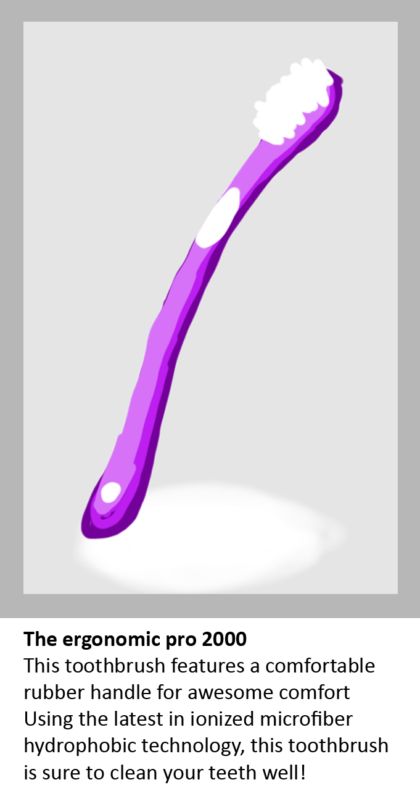
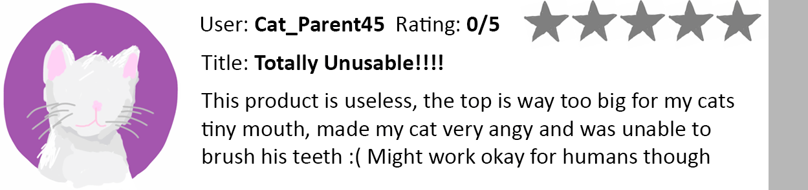
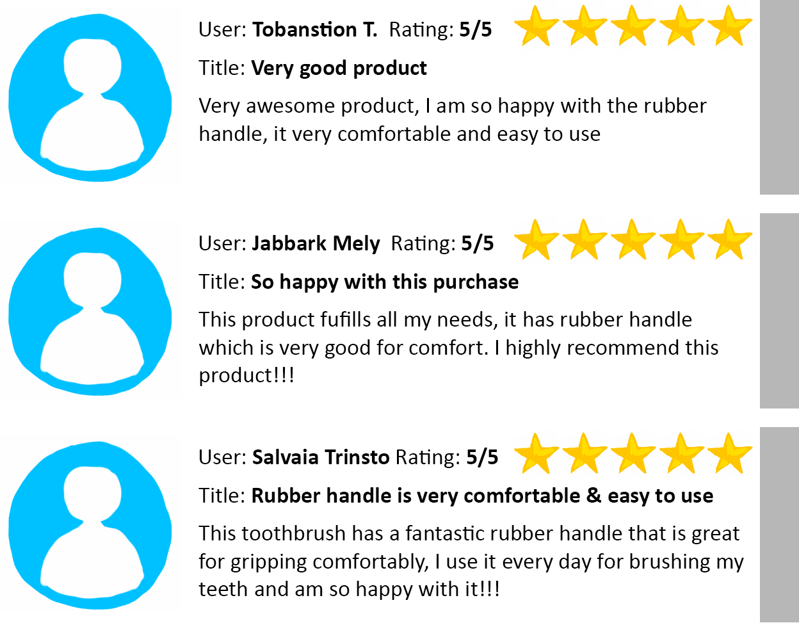
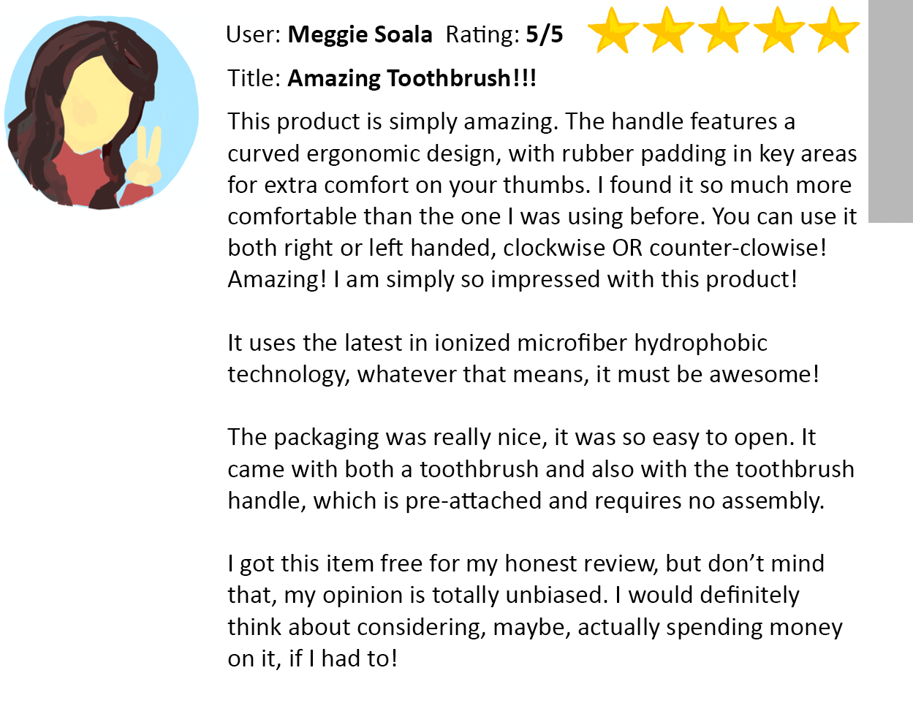

3 Tips for Spotting Misleading or Fake Product Reviews
Fake reviews are becoming increasingly common as businesses realize the importance of creating a positive reputation online. Become a better online shopper by using these tricks to help you spot and avoid products with fake or misleading reviews.
1. There are few negative reviews
You can hardly expect every person to find a particular product perfect, especially if the product is at a 'too-good-to-be-true' price. I usually skip 5-star reviews online in favor of the negative, and focus on the reasons the person was unsatisfied with the item. If there are none, or very few negative reviews, it may be a sign that the item hasn't been reviewed many times- or it may be a sign that the existing reviews are fabricated.
Although companies also generate fake negative reviews to ruin their competitors, in general, negative reviews are actually more likely to give you honest feedback about a product. People are more likely to write a negative review than a positive one, so a glaring lack of negativity can actually be a bad thing!
A negative review like this might help you know when a product doesn't work for a specific application, giving you a better idea what the product's pros and cons are
2. There are Many Reviews with Unimaginative Vocabulary
Pay attention to the way the product is described. Fake reviews often have similar patterns of incorrect grammar, spelling and limited vocabulary, often using the same descriptive words as the product description, such as "flattering", "superb", "gorgeous", "brilliant", "awesome", and other non-specific adjectives that real reviewers are unlikely to use.
A series of positive reviews (including 4 and 5 star reviews) that share similar language and talk about the same feature is a likely indicator that the reviews are fake
3. The review is unrealistically positive
The most difficult types of misleading reviews are actually real reviews, except the reviewer was paid or got the item free in exchange for an "honest" review. These types of reviews may technically be real, but are bias and generally overly-positive. Skip over reviews that go into extravagant detail with unrealistic enthusiasm, and if there are many reviews like this, its a good sign the seller is trying very hard to get you to want their product.
Sponsored reviews are allowed on most online shopping sites. They often contain accurate information, but also are almost always heavily biased towards positivity
Reading online reviews is still one of the best methods for deciding if an item is right for you. Follow these tips for spotting unhelpful reviews and use your instincts, and start to feel more confident that your online purchases will be worthwhile!